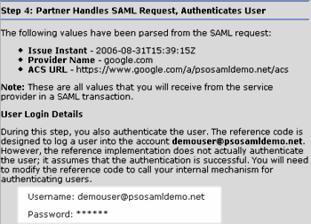
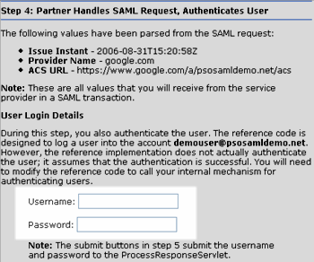

This document describes the web-based reference implementation of a SAML-based single sign-on (SSO) service that logs users in to Google Apps. The web application is a Java application that generates and sends SAML requests, receives and parses SAML requests, calls a function to authenticate users, and then returns a SAML response to the user's browser. The browser must then send the SAML response on to the Assertion Consumer Service (ACS) URL to log the user into Google Apps. The identity provider can choose the appropriate mechanism to use to trigger the post of the SAML response, but possible solutions include a button that the user clicks or a JavaScript function.
This document contains an overview of the code included in the SAML reference package. It also describes a three-stage process for partners who are using the reference implementation as a guide during their own development process.
The following references may help you to implement a SAML-based SSO service:
The SAML reference code performs two types of functionality.
The SAML reference implementation uses a Tomcat (Apache Tomcat 5.5.17) web server and requires you to have the Java Web Services Developer Pack 2.0, which includes the core XML Java technologies to perform SAML-based transactions.
The following list identifies the file and directory structure of the SAML reference code. File or directory names shown in bold, blue text identify files that perform functions handled by the identity provider in a SAML transaction. The remaining files and directories in the list either perform functions handled by the sevice provider in a SAML transaction or they are used exclusively in the user interface (UI). (In practice, your SAML-based SSO service will not need to have a user interface; however, you may want to adapt the UI provided in the reference package to use for debugging purposes.)
*.jsp - This directory contains three JSP files used in the UI for the reference implementation.
global/ - This directory contains images and stylesheets used in the UI for the reference implementation. You do not need to modify these files.
keys/ - This directory contains public and private DSA keys that are used to sign SAML responses. Google also uses the public key to decode SAML responses authenticating users who log in to the psosamldemo.net domain, a sample domain that you can use to test your SAML-based SSO service.
templates/ - This directory contains two templates, one for generating SAML requests and another for generating SAML responses. Your application will not use the request template but you may want to use the response template.
WEB-INF/
The web.xml file maps URL paths to the Java servlets included in the SAML reference package.
The classes/servlets/ subdirectory contains the Java classes, including the servlets, that the reference implementation uses. This code performs the majority of the functions that you will need to incorporate into your SAML-based SSO service. The following list explains each of the Java classes in more detail.
The ProcessResponseServlet class receives a SAML request, parses it, calls a method to authenticate the user, and constructs and sends a SAML response. Your application will need to perform this functionality.
Note: The ProcessResponseServlet.java file contains some code that is included exclusively so that you can observe the servlet's actions in the UI. For example, the doGet method is used in the UI but would probably not be used in your production service. Please look for the following comments to identify code that you can safely ignore or remove if you choose to integrate this code directly into your application.
The Util file contains methods used by either the response servlet or both the request and response servlets to facilitate SAML transactions. Your application will need to perform this functionality.
The XmlDigitalSigner class provides methods that digitally sign XML files using a pair of public and private keys. Your application will need to perform this functionality.
The CreateRequestServlet class constructs a SAML request. In an actual SAML transaction, the service provider will execute these functions. As such, your production SSO service does not need to include functions for creating SAML requests.
The RequestUtil file contains additional utility methods that are either only used by the request servlet or in the UI for the reference implementation. Your SSO service does not need to provide this functionality.
The classes/lib/ subdirectory contains .jar files that are required to run the SAML reference code. These files must be included in your CLASSPATH.
This section explains how you can use Google's SAML reference implementation to implement a SAML-based SSO service that allows users to log in to Google Apps through your site. This document prescribes a three-stage process for partners who plan to use the reference implementation as a guide during their integration process.
Stage I explains the steps for installing the code for the reference implementation and verifying that the reference implementation works on your site.
Stage II explains code modifications that you would make so that the sample code will direct SAML requests to your internal user authentication application. In this stage, you will modify the application to authenticate a user and verify that the user can access Google Apps.
Stage III explains further code modifications that you will need to make so that authenticated users are logged in to Google Apps for your domain rather than Google's SAML demo site.
This reference implementation uses a Tomcat (Apache Tomcat 5.5.17) web server, and the instructions for this step are for partners who are also running a Tomcat server. In addition, this implementation is configured with the Java Web Services Developer Pack 2.0, which includes the core XML Java technologies used to perform SAML-based transactions.
Copy the samltool.war file to the root directory of your web server. Install the SAML reference code by running the following command:
The source code for the reference SAML implementation can be downloaded here.
Your root directory should now contain the file and directory structure explained earlier in this document.
Please ensure that the .jar files in the WEB-INF/lib/ directory of your web application are included in the CLASSPATH for your application.
By this time, you are ready to test your installation. Verify that your web server is running and then try to access the saml_demo.jsp file in your development environment. The URL for the application should be:
Note: You will need to replace HOST_NAME with the host name of your web server.
When you access this URL, you should be able to generate and submit a SAML request by following the instructions in the
Open the identity_provider.jsp file, which is included in the reference package. Locate the two comment blocks that begin with the words Stage II and follow the comments in the instructions. The example below shows one of the comment blocks:
After completing this step, the UI for the reference implementation will display editable username and password fields:
|
Old:  |
New:  |
The login method in the ProcessResponseServlet represents whatever steps you, as the identity provider, take to authenticate a user. If the user is successfully authenticated, the method should return the user's username. If the user is not successfully authenticated, the method should return a null string.
During this step, you need to modify the login method to call your internal code for authenticating a user. You also need to modify your authentication code so that it returns either the user's username or a null string, depending on whether the user is successfully authenticated. If a user is successfully authenticated, your authentication mechanism should return the username that Google Apps associates with the user. This may be the same username associated with the user on your site.
The login method will receive the username and password that you enter in the username and password fields that you added in the previous step.
Note: For this stage, your application should return the username "demouser" when a user is successfully authenticated rather than the user's actual username.
Now you are ready to test your installation again. Verify that your web server is running and then reload the saml_demo.jsp file in your development environment. The URL for the application should be:
Note: You will need to replace HOST_NAME with the host name of your web server.
Generate and submit a SAML request using the submit buttons in the GOOGLE - Service Provider window. Then enter a username and password into the username and password fields and click the Generate SAML Response button. You can then review the SAML response and submit it using the Submit SAML Response button.
If you entered a valid username and password, you should be logged in to the demouser@psosamldemo.net Gmail account. If you did not enter a valid username and password, you should see an error message.
In stage II, you verified that you can use your internal authentication mechanism to log a user into a Google application (Gmail) for the psosamldemo.net domain. In stage III, you will modify the code to log users into Google Apps for your domain.
The SAML specification requires that XML files be digitally signed before they are exchanged between a service provider (Google) and identity provider (Google partner). The sample code in the SAML reference package logs a user into the psosamldemo.net domain. Accordingly, it includes the DSA public and private keys used to encode SAML responses that authenticate users for that domain. Since Google supports RSA, you could also generate keys using the RSA algorithm.
In this step, you will generate a pair of RSA or DSA public and private keys for encoding SAML responses that log users into Google Apps for your domain. After generating the keys, store the public key in one file and the private key in another file. Your web application should be able to access these keys, but users should not be able to access the files through a web browser.
After saving the keys, update your authentication application to use these keys to encode SAML responses rather than the DSA keys included in the SAML reference package. In the ProcessResponseServlet, search for the comment starting with the following text to identify the correct code to change:
After generating your public RSA or DSA key, you need to upload the key to Google using the Admin Console. You also need to provide the URL for your SAML-based SSO service as well as the URL that your users will be redirected to when they log out of a hosted Google application.
At this stage, you need to modify your application so that you log users into their own accounts rather than the demouser@psosamldemo.net accounts. You can either use the Provisioning API to create users or you can use the web interface to create users who can access Google Apps.
Verify that the login method in the ProcessResponseServlet returns the correct username when you enter a username and password in the UI.
Now you are ready for the final test. Verify that your web server is running and then reload the saml_demo.jsp file in your development environment. The URL for the application should be:
Note: You will need to replace HOST_NAME with the host name of your web server.
Generate and submit a SAML request using the submit buttons in the GOOGLE - Service Provider window. Then enter a username and password into the username and password fields and click the Generate SAML Response button. You can then review the SAML response and submit it using the Submit SAML Response button.
If you entered a valid username and password, you should be logged in to the Google Apps account that corresponds to that username. If you did not enter a valid username and password, you should see an error message.
The SAML reference package includes templates for SAML requests and SAML responses.
The AuthnRequestTemplate.xml file contains a template for SAML requests. The file contains four variables:
The SAML request has the following format. The variables listed above are shown in bold, blue text.
The SamlResponseTemplate.xml file contains a template for SAML responses. The file contains the following variables:
RESPONSE_ID - A 160-bit string containing a set of randomly generated characters. The code calls the Util.createID() method to generate this value.
ISSUE_INSTANT - A timestamp indicating the date and time that the SAML response was generated. The code calls the Util.getDateAndTime() method to generate this value.
ASSERTION_ID - A 160-bit string containing a set of randomly generated characters. The code calls the Util.createID() method to generate this value.
USERNAME_STRING - The username for the authenticated user. Modify the ProcessResponseServlet.login() method to return the correct value.
NOT_BEFORE - A timestamp identifying the date and time before which the SAML response is deemed invalid. The code sets this value to the IssueInstant value from the SAML request.
NOT_ON_OR_AFTER - A timestamp identifying the date and time after which the SAML response is deemed invalid.
AUTHN_INSTANT - A timestamp indicating the date and time that you authenticated the user.
The SAML response has the following format. The variables listed above are shown in bold, blue text.